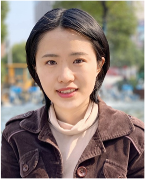
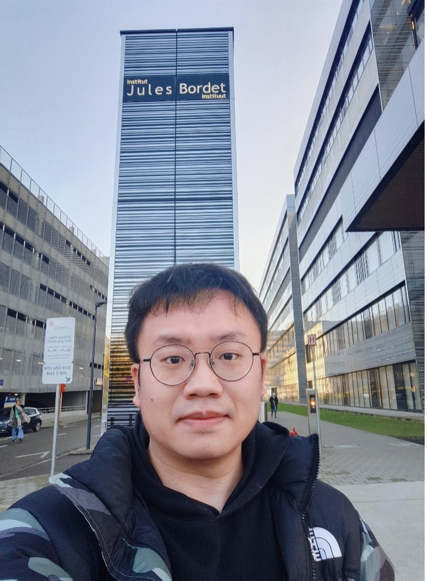
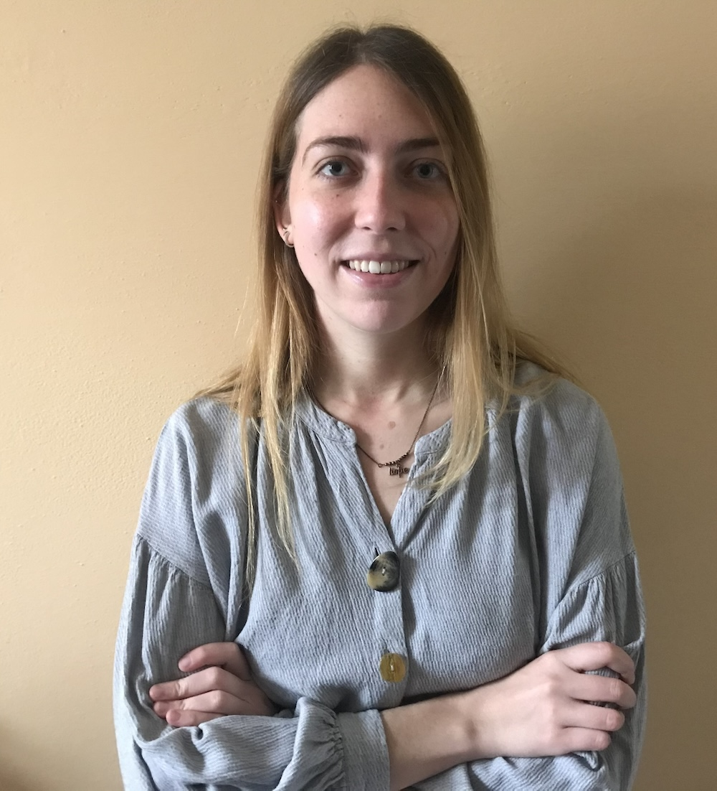
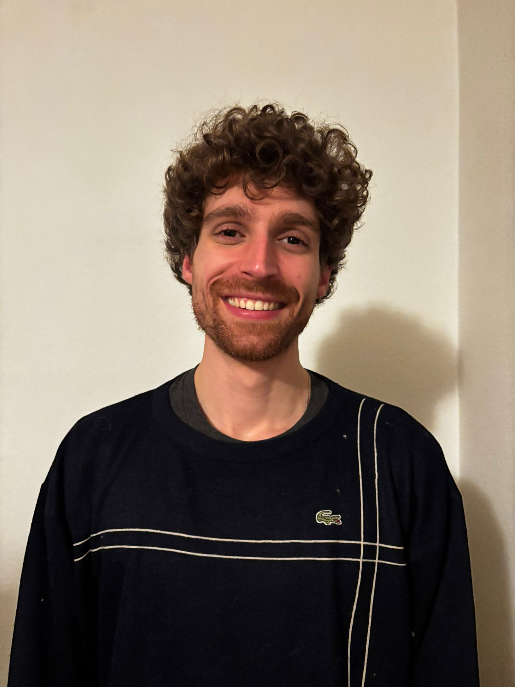

Our team
-

Jana Jeschke, PhD
Group Leader
Jana Jeschke studied Molecular Medicine at the University of Erlangen-Nuremberg, Germany (2003-2008), and performed her PhD research at the Johns Hopkins University in Baltimore, USA (2008-2013), in the groups of Prof. Nita Ahuja and Prof. Jim Herman and in collaboration with Prof. Baylin. During this time, she identified and functionally characterized aberrantly DNA methylated genes in breast cancer and assessed them as novel biomarkers.
In 2013, Jana moved to Belgium to start a postdoctoral training in the Laboratory of Cancer Epigenetics at Université Libre de Bruxelles (ULB) in Brussels. Under the supervision of her lead mentor. Prof. Fuks and the breast cancer expert Prof. Sotiriou, she explored changes of various epigenetic modifications on DNA and RNA in breast and other cancers and the clinical relevance of these aberrations for cancer diagnosis and therapy. Her most notable works include the development of an epigenetic immune signature that predicts survival and response to chemotherapy in breast cancer (JCI 2017) and the discovery of m6A mRNA methylation changes in breast cancer and their impact on pathways driving cancer progression and therapy resistance (Nature Cancer 2021). Jana was awarded a postdoctoral fellowship from the Belgian National Fund for Scientific Research (FNRS) in 2014.
In 2022, Jana obtained the mandate of Chercheuse Qualifiée (Associate Professor) from the FNRS to start her own research group at ULB focusing on applied cancer epigenomics and epitranscriptomics. Her group is establishing new and cutting-edge technologies (e.g. Nanopore sequencing) for the mapping of DNA and RNA modifications in tumor biopsies as well as developing innovative bioinformatics tools for the analysis of epigenome/epitranscriptome maps. For her ground breaking research, Jana was awarded an ERC Starting Grant in 2023.
-

Damjan Avsec
Postdoctoral Researcher
Damjan earned his Master’s degree in Pharmacy in 2018 and a Ph.D. in Biomedicine, specialising in hemato-oncology, in 2023. His doctoral thesis focused on understanding the role of proteasome, immunoproteasome, and autophagy in the therapy and resistance of leukemia.
Damjan is currently pursuing an MBA from the School of Economics and Business, aiming to use an entrepreneurial mindset to efficiently translate scientific discoveries into therapeutic solutions. He has joined the ACEE group, under the leadership of Dr. Jana Jeschke, to unravel the role of the epigenome and epitranscriptome in resistance of cancer. His aspiration is to pioneer the integration of epigenomics/epitranscriptomics into hemato-oncology, driving forward advancements in the field.
-

Siqi Zheng
Postdoctoral Researcher
Siqi obtained her Master's degree in Medical Biochemistry and Molecular Biology from Peking University, and a Ph.D. from the University of Groningen, in 2024. In her doctoral dissertation, she investigated chromosomal instability and potential therapeutic targets in cancer.
In the same year, she joined the Applied Cancer Epigenomics and Epitranscriptomics research group led by Dr. Jana Jeschke as a postdoc. Her work mainly focuses on epigenetic and epitranscriptomic alterations in cancer treatment. She aims to understand the molecular mechanisms underlying drug resistance in cancer and develop novel therapeutic approaches.
Outside the office, Siqi is interested in running and reading books.
-

Dídac Jiménez Sánchez
PhD Student
Dídac studied biosystems engineering at the Polytechnic University of Catalonia where he developed an interest in genetics and programming. He carried out his bachelor's thesis at the Centre for Research in Agricultural Genomics, about melon QTL's and CRISPR/Cas9. After that, he decided that he wanted to have a career in research and studied a master's degree in Bioinformatics and Biostatistics at the Open University of Catalonia, where he carried out a master's thesis on the benchmarking of single-cell RNA sequencing preprocessing. With the master finished, he started a PhD at the ACEE lab with the goal to study the role of epitranscriptomics in tumor-associated neutrophils in lung cancer.
Outside the office, he is passionate about swing dancing, bouldering and reading, among other things.
-

Brendan Beahan
PhD Student
After working as an English Teacher in Tokyo and then as a data analyst for an online food-ordering software company, Brendan decided to pursue his Master in Bioinformatics at KU Leuven. During the master he worked on many different bioinformatics projects, including a CNN for classifying amyloid-beta plaques in Alzheimer's patients and a master's thesis investigating the molecular dynamics of phage-induced lysine acetylations. Brendan’s chief aim is to work on challenging scientific problems with direct applications to human health, which is in large part why he was excited to begin his work within the Jeschke Lab investigating the application of nanopore technology to better understand m6A dysregulation in breast cancer.
When not working at the lab, Brendan enjoys jogging (especially at park cinquantenaire!), weightlifting and watching films.
-

Raphaël Van de Vijver
Lab technician
Raphaël earned his bachelor degree in Biomedical research at the Avans university of applied sciences. For his thesis, he pursued his interest in next generation sequencing by comparing Oxford nanopore and Illumina sequencing of the gut microbiome.
Here at the ACEE group, he will support the students in the lab with their research projects and manage the lab.
Outside of the lab, Raphaël enjoys playing rugby.
-

Peilin Ouyang
PhD student
Peilin is a gynecologic oncologist with experience in clinical cohort studies. She is focused on improving treatment strategies by translating research findings into clinical practice. During her master's studies, she conducted a retrospective analysis on neoadjuvant therapy for cervical adenocarcinoma. In her clinical work, she developed a predictive model to evaluate the risk of gestational diabetes mellitus (GDM) in pregnant individuals with polycystic ovary syndrome (PCOS). Currently, she is pursuing doctoral studies, expanding her research skills in tumor epigenetics to deepen her understanding of cancer biology.
In her free time, Peilin enjoys hiking, watching movies, and exploring new recipes.
-

Licheng Li
PhD student
Licheng graduated in July 2023 from the Clinical Medical College of Guizhou Medical University with a Master’s degree in Hematology. Before completing his Master’s, he gained seven years of experience as a clinical physician specializing in hematologic oncology. His Master’s research focused on understanding the mechanisms of transcription factors and their regulatory networks in malignant hematologic diseases.
In October 2024, Licheng joined the ACEE lab as a Ph.D. candidate under the guidance of Dr. Jana Jeschke. His research aims to explore the roles and mechanisms of m6A modifications in breast cancer and other cancers, with a goal of uncovering novel insights into cancer progression and treatment.
Outside the lab, Licheng enjoys traveling and music.
-

Laura Pistoni Vianelli
PhD student
During her master’s studies in Italy, Laura developed a deep interest in oncology and joined the Cancer Biology & Epigenetics Group at IPO-Porto, where she studied epigenetic mechanisms in cancer under Prof. Carmen Jerónimo. After losing her beloved mamma to breast cancer, she moved to the U.S. to research the genetic and epigenetic determinants of chemotherapy resistance at OMRF in Jake Kirkland’s lab. Seeking to broaden her expertise, she later joined Dr. Jana Jeschke’s group as a PhD student to study epitranscriptomic alterations in cancer treatment.
Outside the lab, Laura enjoys pizza, weekend brunches, reading, Pilates, and traveling to visit friends worldwide. She lives by the motto “You cannot change the world if you don’t have fun” and her mamma's favorite saying, “Va a belase.”
-

Henry del Marmol
MSc student
Henry is a second year Master’s student of the Cancer, Stem Cell and Developmental Biology program at Utrecht University. He joined the lab for his bioinformatics internship on the benchmarking of bioinformatic tools to detect m6A modification profiles in breast cancer, using Oxford Nanopore Direct RNA Sequencing data.
Outside of the lab, Henry enjoys working out, playing music, and drawing.
Alumni
-

Milena Pierzchalska
Master Student
Milena joined the lab for her master thesis on the benchmarking of bioinformatics tools for the detection of RNA modifications from Oxford Nanopore Direct RNA Sequencing data.